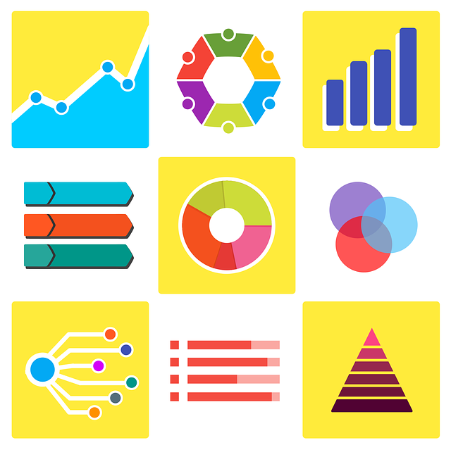
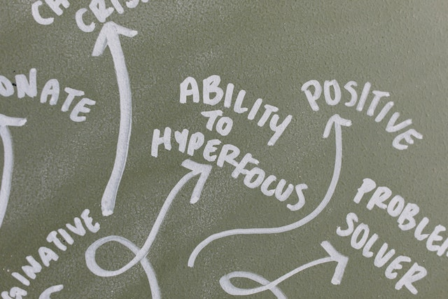

Discover your natural strength-alignment and unleash your superpowers.
Our Assessments
These are our easy-to-use questionnaires designed to help you assess where your relative strengths are. Each will give you immediate results. If you complete multiple, we will build out your strength profile for you. Take them all for a comprehensive profile for free!
Personality
This test will tell assess your personality profile on the five most important factors.
Aptitudes
Here we assess what natural abilities you were born with, as opposed to skills you learned from experience or training.

Strengths
This assessment measures your current strengths that you have developed over the years beyond the aptitudes you had at birth.

Interests
Here we measure what your interests are. Align your interests with things you are good and you may find new hobbies or career directions.
Meet the Scientist
This page and assessments were put together by Rudy Sochan. He is an Industrial-Organizational Psychologist who loves to help people reach their full potential. His intention for this page is for people to measure important aspects of themselves to take into consideration when exploring personal interests and career choices. Rudy believe that we all have our strengths, and it is our responsibility to use them to help ourselves and others. But first, it is helpful to know what are strengths are so we can turn them into SuperPowers.